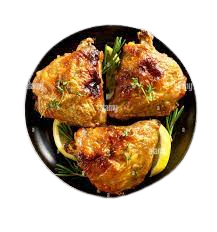

15 minutess | serves: 4 people
If you're a grilled chicken thigh and Asian food fan, you're in for a treat. This marinade has the perfect combination of savory-sweet-spicy-salty, and these juicy thighs will make your entire family happy. Serving suggestions would be jasmine rice, grilled or stir-fried veggies, or a chilled cucumber salad. Garnish with chopped cilantro and serve with lime wedges on the side.
15 minutess | serves: 6 people
The recipe for this easy salad came from my grandma, who made it in the summers with fresh dill and cucumbers from her garden.
15 minutess | serves: 6 people
This isn't your Grandma's tuna casserole, but it is sure to please everybody in the family.